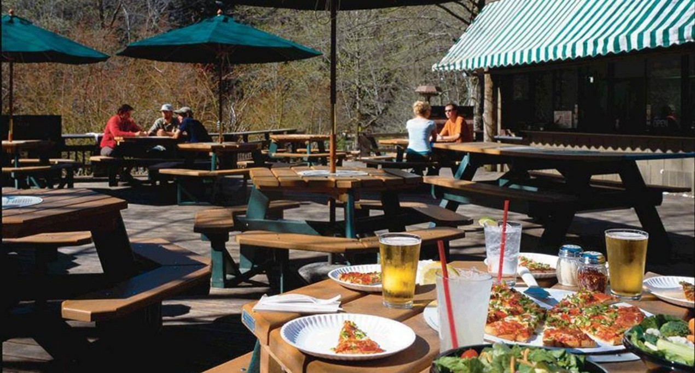

Plan Your Trip
Food Options
Food options in Yosemite National Park are managed by Yosemite Hospitality, and range from groceries to pizza to a fine dining experience at The Ahwahnee. Dining reservations are available 366 days in advance and are highly recommended—especially from spring through fall and during holidays.
- The Ahwahnee Bar: Indoor and outdoor seating available year-round for drinks, hot cocoa, and snacks.
-
Curry Village Pizza Patio & Bar: Offers pizza, salads, and drinks for lunch and dinner. Open seasonally with outdoor seating.

Lodging
Lodging options inside Yosemite National Park are also managed by Yosemite Hospitality. Accommodations range from simple tent cabins to deluxe rooms. Reservations are available 366 days in advance and strongly recommended during peak seasons.
- Yosemite Valley Lodge: Located near Yosemite Falls with easy access to dining and attractions. Open year-round.
- Wawona Hotel: A historic Victorian lodge near the Mariposa Grove of Giant Sequoias. Open seasonally.
Trip Duration Recommendations
1-Day Highlights Tour
Highlights: Focus on Yosemite Valley's iconic sights. Yosemite Falls, El Capitan, and Half Dome.
Itinerary:
Morning: Tunnel View panoramic photo stop.
Late Morning: Bridalveil Fall & Yosemite Falls base walk.
Afternoon: Picnic, riverside walk, or visit the Visitor Center.
Consider a guided day tour to maximize sightseeing.
Note: Tight schedule. Plan transportation and timing carefully.
2-Day In-Depth Experience
Highlights: Extend the 1-day tour and explore deeper into the park.
Itinerary:
Day 1: Same as 1-day trip.
Day 2: Visit Mariposa Grove of Giant Sequoias, hike to Mirror Lake.
Optional stargazing in Yosemite Valley at night.
Note: Book lodging or campground early.
3-Day Nature Discovery
Highlights: Go deeper into Yosemite’s natural wonders with moderate hikes.
Itinerary:
Days 1-2: Follow the 2-day plan.
Day 3: Hike to Vernal & Nevada Falls via Mist Trail or explore Hetch Hetchy Reservoir.
Note: Bring water, food, and hiking safety gear.
4-5 Day Outdoor Adventure
Highlights: Extend exploration with hiking, climbing, or rafting activities.
Itinerary:
Build upon the 3-day plan with optional:
- Half Dome hike (permit required)
- Rafting on Merced River
- Exploring alpine meadows or remote northern trails
Note: Research permits and safety for outdoor adventures.
Helpful Tips
- Yosemite gets crowded in summer – book lodging and entrance early.
- Weather varies – bring layered clothing.
- Respect nature – pack out your trash.
- Check Yosemite's official site for trail closures & updates.